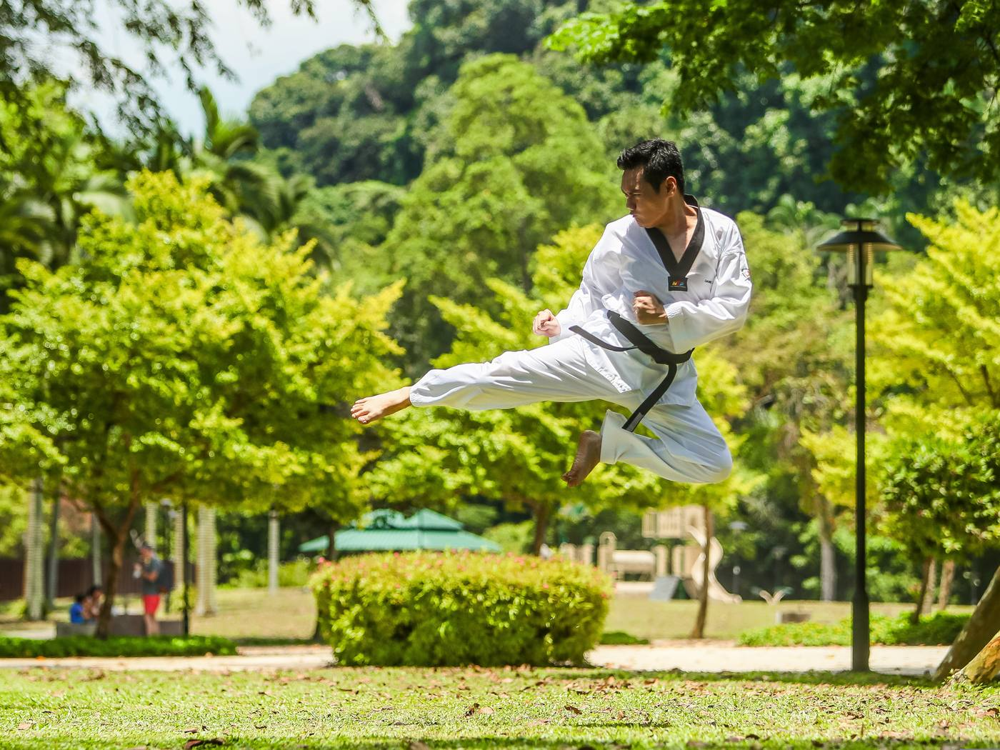
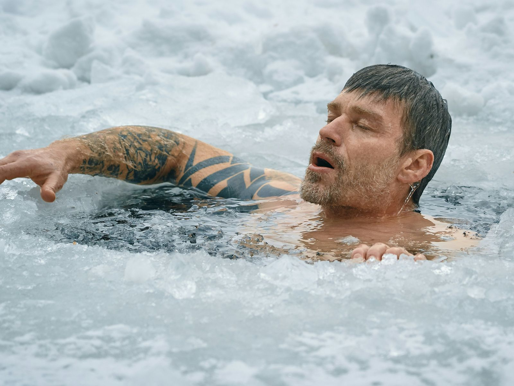

Grabels · Montpellier — Corps, mental, émotionnel
Croire en soi
est un entraînement.
Coaching corps-esprit, arts martiaux, yoga et bien-être. Un accompagnement exigeant et bienveillant pour construire une confiance qui se vit, pas seulement qui se pense.
Cliquez sur le cercle — les cinq éléments s'ouvrent
Comment ça se passe
Trois étapes,
zéro friction.
一Vous écrivez
Un message via le formulaire de contact, avec la pratique qui vous attire. Réponse sous 48 h.
二On échange
Un court échange pour comprendre votre situation, vos objectifs et vos contraintes, et fixer la séance découverte.
三Vous essayez
La séance offerte a lieu. Ensuite, vous décidez — librement — de la suite qui vous convient.
Le projet
Tout est parti
d'une feuille blanche.
Un jour, David écrit sur une feuille ce qu'il souhaite vraiment : faire ce qui lui plaît, pleinement. Croire en Soi est né de cette phrase — et de la conviction qu'on peut réellement aspirer à la vie qu'on souhaite.
Formé au sport et aux arts martiaux depuis l'enfance, David relie le corps, le mental et l'émotionnel : la confiance ne se construit pas uniquement en parlant, elle se vit. Chaque accompagnement commence par une séance découverte offerte, accessible à tous, sans aucun niveau sportif requis.
L'approche en trois piliersLes cinq éléments
Cinq voies,
une même direction.
Chaque pratique porte un élément. Ensemble, elles composent un chemin complet vers la confiance : le feu de l'engagement, la terre de l'ancrage, l'eau du relâchement, l'air du souffle, le bois de la croissance.
Arts martiaux
Discipline, respect, engagement. Cours à la rentrée — la voie signature du club.
Rubrique phare →Activité Physique Adaptée
Renforcement et mouvement pour retrouver énergie et solidité intérieure.
Découvrir →Bien-être
Respiration, présence, gratitude : apaiser la pression, stabiliser l'émotionnel.
Découvrir →Yoga
Souffle et mobilité pour reconnecter le corps et libérer les tensions.
Découvrir →Voyages & retraites
Colombie, Cap-Vert : partir pour grandir, revenir transformé.
Découvrir →Le club ouvre
à la rentrée.
Porté par David Nakamura, le club Croire en Soi est en cours de création. Il placera la discipline, le respect et la bienveillance au cœur de sa mission. Cours à Grabels prévus à la rentrée ; des interventions en écoles, collèges et centres de loisirs sont envisagées par la suite.


L'expérience d'une journée
Workshop bain froid
— reset corps & esprit.
Respiration Wim Hof, méditation, yoga, immersion dans le froid, repas, marche en nature et échange avec une psychologue. Une journée complète pour relâcher la pression et renforcer votre résilience mentale et physique.
Le programme des 7 pratiquesJournal — réflexions et pensées
Écoles · ALSH · IME · Communes
Vous accueillez
un groupe d'enfants ?
Parcours d'agilité et motricité, jeux d'opposition et maîtrise de soi, éveil corporel et posture : des ateliers pour les 3-12 ans, en initiation, en cycle sportif ou en stage sur les vacances scolaires.
Des séances d'une heure à la demi-journée, modulables selon vos créneaux et vos effectifs, adaptées à tous les profils d'enfants — inclusion comprise. Une offre en cours de lancement autour de Montpellier.
L'offre d'interventions en détailCommencer sans barrière
Votre première séance
est offerte.
Aucun niveau requis. Un échange, une pratique, et vous décidez ensuite — librement.